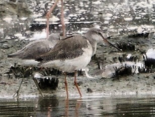

Spotted Redshank
Tringa erythropus
Order: Charadriiformes
Family: Scolopacidae

A redshank with a longer neck, bill, and legs. Legs are red, and so is the base of the lower mandible. Bill is slightly downcurved at the tip. In non-breeding plumage, has brownish grey upperparts and white underparts. Field guides often describe "elegant" proportions, and frankly I despise this description because it is not specific at all. It took me a good while to understand that "elegant" is the opposite of "stocky" and "chunky", and this translates to longer necks and legs, and slender, elongated shapes.